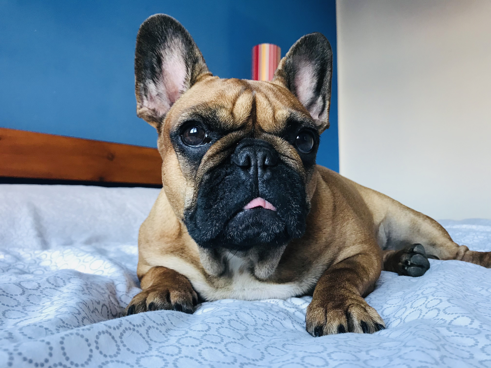
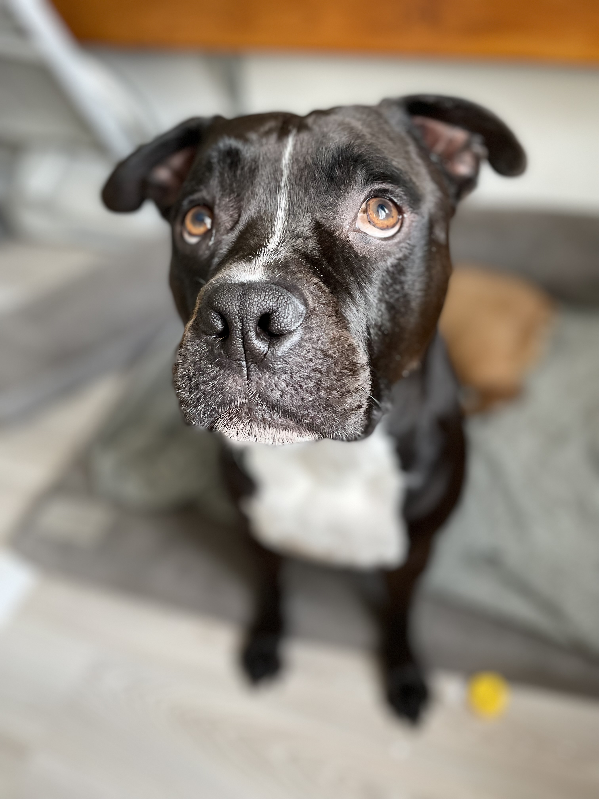

Jmenuji se Adriana Plášilová a ačkoliv nyní žiji v Praze, jsem rodačka z Ostravy. Jsem milovnice psů a nyní i krotitelka dvou dětí.
Pracovala jsem ve zdravotnictví jako vedoucí kanceláře. Svoji pozici jsem nazývala holka na všechno a kancelářská krysa. Náplní mé práce bylo vedení recepce a koordinace fyzioterapeutů s lékaři. A dále vlstně vše, co je potřeba ... objednávání potřebných věcí, podklady pro účetnictví, zaškolování zaměstnanců, kontrola docházky, nabírání nových zaměstnanců, správa rezervačního i lékařského programu. Zkrátka, holka na všechno.
Jako správna milovnice psů musím mít psa. Tak mám hned dva.
 Prvním miláčkem je Dante. Dante je americký stafordšírský bulteriér. Je to skoro 30 kg vážící chlapeček, plný lásky. Myslí si o sobě, že je zakletý člověk. Jak se to projevuje? Například, chce spát v posteli a nejlépe vedle nás s hlavou na polštáři.
Sofu je holčička Francouzského buldočka. Sofinku jsme adoptovali z organizace Spokojený pes, kam byla umístěna po záchraně z množírny. Tahle chrochtající šmudlina sloužila jako zdroj štěňat. V jejích 4 letech už stihla minimálně 6 porodů. Při posledním porodu jí někdo nekvalifikovaný udělal císařský řez, čímž se stala nepotřebnou a na odpis. Naštěstí se dostala k nám, kde se už má dobře a žije si krásným psím životem.
Celý život jsem věděla, že budu mít místo dětí psy. Pak jsem poznala manžela a než jsem se stihla rozkoukat, mám dvě děti.
Kromě svých psích miláčků jsem se stala pyšnou dvojnásobnou mámou. Mám čtyři roky starého syna Matouška a půlroční Zoe, ale říkáme jí Zoli.
Tento odstavec chci využít jako poděkování svému skvělému manželovi, že mě teď při studiu u CzechITas tak moc podporuje.
P.S. Napsala jsem to dobrovolně.